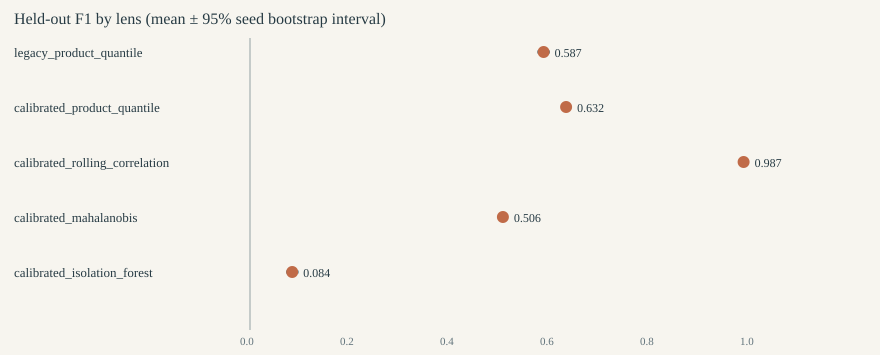

It keeps the original events, the method that found a pattern, the policy decision, and any action result connected so a person can inspect the full trail.
Start with two ideas: a Lens looks for a pattern; a Reaction describes what workflow follows an event. A finding can inform a decision, but it does not grant permission to act.
Reusable core and experiments
The core handles common event, storage, Lens, and policy work. Experiment profiles decide how one dataset is read, which domain features to build, and how to evaluate a particular study.
Reusable
src/reflex/core/
Works with normalized Event and EventWindowFeatures records. It stores evidence, fits and scores against a supplied feature schema, runs caller-defined SQL Lenses, and applies bounded policy tools. It does not assume transaction fields such as amount or channel.
uv run reflex replay --sql-file lens.sql
Dataset or study-specific
src/reflex/experiments/
Contains BPI and Loghub readers, transaction features, sample SQL, synthetic data and labels, benchmark protocols, and report commands. These modules compose the core for a specific example and may carry assumptions that do not fit other applications.
uv run reflex experiments discovery demo --out .reflex-demo
uv run reflex experiments transaction-replay
Older top-level demo, benchmark, news-adapter, and core import paths remain as compatibility routes. New code should use the explicit reflex.experiments modules for examples.
Two workflows, one evidence trail
Reaction workflow
What should follow this event?
A Reaction is a graph of registered, versioned functions. It can inspect event types and state, emit observations, branch along declared edges, and request bounded actions.
event→function graph→observation or action
Discovery workflow
What pattern is present in this history?
The discovery path builds time-aware features, fits or applies Lenses, calibrates thresholds, and scores later events or windows. Its policy can route selected findings to bounded local investigation.
event history→features and Lenses→scored observations
The six stages
This is the common shape of a REFLEX run. Choose a tab to explore a step; the left and right arrow keys move between tabs. Some workflows stop after recording an observation, while others continue through policy and a registered action.
Step 1 of 6 · Input
Events arrive: keep a reliable account of what happened
An event is one dated record from a source. REFLEX keeps its identity, event time, source, entity references, and data so later work can cite the exact input. New findings are written as additional records; the original input is not rewritten.
What the fields mean
event_id identifies this record. Identical IDs and content are deduplicated; conflicting content under the same ID is rejected.
event_type tells a workflow what happened, such as news.story.
event_time is the source event's timezone-aware timestamp.
entity_ids names the company, account, system, or other subject.
source, provenance, and schema_ref help explain where it came from and how to read it.
payload and attributes carry the source details needed by downstream steps.
Worked input from the synthetic news demo
This is the shape of the Northstar story event used by reflex experiments demo-news. Some optional metadata is omitted for readability.
A timestamp without a timezone is rejected. Missing or unstable IDs make it harder to deduplicate or cite the source record. If evaluator-only truth is mixed into an input event, a later evaluation is no longer label-blind.
Step 2 of 6 · Analysis
A Lens looks: make the method visible and repeatable
A Lens is a named, versioned method for inspecting events. REFLEX also uses registered Reaction functions to transform one event into another or compare an event with saved state. The method decides what pattern to report; it does not decide on its own whether an action is allowed.
Three kinds of checks in this project
Deterministic SQL Lens: the reusable core runs a caller-supplied bounded query. The transaction experiment includes an example that selects native events with an amount of at least 4,000.
Statistical Lenses: fit or load model artifacts from time-window features, calibrate thresholds on a separate interval, then score later windows.
Reaction function: run a registered, versioned function on a matching event and the declared state snapshot.
Example: portfolio exposure
The story-understanding function extracts the named companies. The next function compares those names with the demo portfolio's saved holdings.
story mentions NORTHSTAR→portfolio contains NORTHSTAR→relevant=true
The function is recorded as portfolio-exposure@1.0. A different version can be inspected as a distinct method.
Discovery phase
Purpose
Boundary
Training
Build features and fit the statistical model.
Uses earlier events only.
Calibration
Choose a threshold for the fitted method.
Kept separate from model fitting.
Evaluation
Measure how the selected method scores later events.
Must remain unseen during fitting and calibration.
Why name and version a Lens?
A reviewer should be able to tell which rule or model produced an observation. Version IDs and stored artifacts help reproduce or compare a method. A changed rule should not silently overwrite the meaning of an older result.
Step 3 of 6 · Evidence
Evidence is linked: make a finding inspectable
A Lens result becomes an observation. It records what was found, which subject and time window it concerns, which Lens version produced it, and which input events support it. The event IDs let a reviewer trace a finding back to source activity.
news-100-initial input story→observation.news_understanding story details→observation.portfolio_exposure portfolio relevance
What an observation carries
Observation ID and type.
Lens ID, version, and subject.
Window start and end, with the result value.
Supporting event IDs and any state snapshot used.
Quality details and provenance about how it was produced.
Two related record types
Observation is the structured Lens result. ObservationEvent is the event-ledger form of that result. Its parent event IDs preserve the evidence chain.
Example review questions: Do the cited IDs exist? Do they refer to the same subject? Were they available by the observation time? Does the evidence actually support the interpretation?
Step 4 of 6 · Decision
Policy checks: decide whether to record, investigate, or defer
Policy is the decision boundary between a finding and a next step. In the statistical discovery path, the local policy checks whether the observation is flagged and whether investigation budget remains.
Discovery policy example
record an observation when its calibrated anomaly flag is not set.
investigate a flagged observation while the investigation budget can still be consumed.
defer a flagged observation when the run has reached its budget.
Illustrative budget arithmetic
If a run permits three investigations and two have been used, a flagged item can consume the final slot. If all three are already used, the observation remains recorded and policy defers further investigation.
Reaction execution checks subscription, event and output schemas when declared, required state, registered functions, event access scopes, and maximum step/output/retry counts. These runtime checks are separate from the discovery PolicyEngine.
What permission means here
A Reaction's permission list is compared with the permission named by an action's registered function. This is a local allowlist boundary, not a full identity provider or user approval service. A deployment that requires human approval must enforce it in the host application or an explicit review step.
Step 5 of 6 · Action
A safe step follows: request only a registered, bounded function
A Reaction function can emit a new observation, request a registered action, or emit nothing and stop. An action event names a specific function and provides structured arguments; it does not contain arbitrary executable code.
Before an action runs
The action function and version must be registered.
The required permission must match the registered function and be granted to the Reaction.
Configured argument schemas must accept the request.
The retry count and workflow output budget must allow the attempt.
The function must return a structured result that passes any configured result schema.
Example: synthetic portfolio alert
For a relevant story, the demo emits an action for publish_to_pm@1.0. The registered permission is publish:portfolio_manager, and the request allows one retry.
The demo publisher is an in-memory simulation. No real message is sent.
Step 6 of 6 · Record and replay
The result is saved: keep a trail that can be reviewed
REFLEX writes derived records alongside the original input. A Reaction run records its trigger, version, function versions, emitted event IDs, state snapshot and hash, status, errors, and timestamps. Earlier execution traces stay out of later function snapshots; otherwise each saved run would contain older runs again and the replay record would grow recursively.
SQLite state store: versioned state, audit reasons, budgets, execution records, and Lens-candidate transitions.
Artifact directory: versioned statistical models and manifests.
Replay and duplicate protection
Replaying an event checks the workflow using its recorded inputs. The action executor can return a prior successful result; when a replay would otherwise perform an external side effect, it skips that side effect.
A replay is for checking or reproducing behavior. To retry a real action, create an explicit new action under the host application's retry and approval rules.
How does the record chain look?
NativeEvent → ObservationEvent → ActionEvent → ActionResultEvent. Each derived event can refer to its parent or cause, while the SQLite run record stores the broader workflow context.
The main ideas
Term
Meaning
Example
Event
A dated record of something that happened.
A news.story or a payment status update.
Event ledger
The ordered history of source events and later derived records.
DuckDB stores inputs, observations, action requests, and action results.
Lens
A named, versioned method for finding a pattern.
A bounded SQL threshold or a statistical detector.
Observation
A finding linked to its subject, result, method version, and evidence IDs.
“Exposure changed in this window,” with event IDs to inspect.
Policy
A rule that decides whether to record, investigate, defer, or proceed.
Defer when the investigation budget is exhausted.
Reaction
A versioned workflow graph connecting events, functions, state, and output events.
Understand a story, check portfolio exposure, then possibly notify.
Action event
A request for one registered function with arguments and a permission requirement.
Ask a simulated publisher to send an alert.
Action result
A separate record of whether an action attempt succeeded or failed.
“Delivered” after the simulated retry.
State
Versioned information used by a later step, with an audit reason and time.
The synthetic portfolio's holdings or a Lens candidate's status.
Replay
Repeat a workflow over saved inputs to inspect or reproduce its decisions.
Recheck emitted event IDs without sending another external message.
Separate record types
The code gives each kind of record its own type, while sharing common event fields such as ID, time, source, and lineage.
NativeEvent
An input from a source or synthetic generator. It is the starting evidence for later processing.
Observation and ObservationEvent
Observation carries Lens output and evidence references. ObservationEvent is its ledger representation.
ActionEvent and ActionResultEvent
The request and the attempt outcome are different records, so the action trail stays explicit.
Worked example: a synthetic news story
The repository's reflex experiments demo-news command shows how a Reaction joins the pieces. It uses invented stories, an invented portfolio, and a local simulated publisher.
1. The input event
The story arrives as a NativeEvent. The event ID, event type, time, source, entity, and payload make the input traceable.
portfolio_news_intelligence@1.0 subscribes to news.story. Its versioned functions create a story-understanding observation, then compare the company names with saved portfolio holdings.
news.story→understand→exposure check
3. Observations keep evidence
Each result is saved as an ObservationEvent linked to the event it assessed. Following parent links leads from exposure to story understanding and then to the original story.
Example lineage:news-100-initial ↓ parent of observation.news_understanding ↓ parent of observation.portfolio_exposure
4. The workflow chooses a path
A relevant exposure observation can branch to a relationship investigation and to the notification function. An unheld company's story is still recorded, but this example creates no portfolio alert for it.
5. The action boundary checks the request
The notification function can emit an ActionEvent. The executor checks the registered function, the matching permission, and any configured argument or result schema before running it.
The publisher's success or failure becomes an action-result event. The demo also exercises a transient failure and retry, duplicate suppression, a new story revision, a manager response, and an unverified supplier hypothesis.
The same story through the run
1
Story arrives. news-100-initial says Northstar raised its outlook.
2
Story is understood. A versioned function emits observation.news_understanding.
3
Exposure is checked. The synthetic portfolio contains Northstar, so the observation marks it relevant.
4
Notification is requested. A registered action function runs under the configured permission.
5
Attempt and result are recorded. The first simulated attempt fails once; its allowed retry succeeds.
6
Duplicate is suppressed. The same story revision at 09:05 does not create duplicate notification work.
All story and portfolio data in this example are synthetic. The publisher runs in memory and sends no real message.
A second path: statistical discovery
The discovery workflow analyzes event histories in time order. It builds features, fits or loads versioned Lenses, records observations, and can investigate selected findings under a fixed budget.
Training periodBuild features and fit the model using earlier events.
Calibration periodChoose thresholds separately from model fitting.
Later evaluation periodScore new events or windows; do not train on this period.
Deterministic Lens
SQL threshold
The reusable SQL Lens runs a query supplied by the caller. The transaction experiment's example selects native events whose amount is at least 4,000. Queries run through one bounded SELECT or WITH against the local events relation.
Statistical Lenses
Learned pattern scores
The synthetic discovery path fits or reuses statistical artifacts, calibrates thresholds, and scores later entity windows. Manifests record the seed, feature names, training cutoff, and data signatures.
Six controlled synthetic scenarios
Exposure drift
Gradual exposure change before a static limit is crossed.
Collateral deterioration
Several moderate changes combine into stress.
Rare sequence
An ordered chain matters more than any one event.
Correlation shift
The relation between features changes while their individual distributions remain similar.
Spurious confounder
An apparent relationship breaks and a different driver becomes relevant.
Unseen mechanism
A new partner and value interaction appears after training.
What a statistical flag means
A flag says that a scored pattern crossed a calibrated cutoff. It does not, by itself, say that the event broke a business rule or that something harmful happened.
Explicit rule
A named condition is met
A rule can say “flag an amount of 4,000 or more.” The condition is visible and produces the same result for the same input. A reviewer can see exactly which threshold was crossed.
Statistical flag
A pattern looks unusual
The Autoencoder and Isolation Forest score feature combinations against earlier data. In the BPI run, each cutoff was set at the 98th percentile of its calibration scores. That cutoff is explicit; the model has no written business rule explaining why a long wait, repeated workflow step, or unusual combination is bad.
What the BPI sample showed
The models scored completed loan-application cases using event count, duration, activity patterns, resources, and offer fields. Outcome-status events and Accepted/Selected fields were left out of the model inputs. There are no independent anomaly labels in this dataset, so these results cannot tell us how many flags are correct.
Lens
Later cases flagged
What that means
Autoencoder
120 of 6,019 (2.0%)
These case features were difficult for its model to reconstruct.
Isolation Forest
178 of 6,019 (3.0%)
These cases were easier to isolate from the fitted cases.
Both
62 cases
Both lenses ranked these cases beyond their own calibrated cutoffs.
Possible process friction
Application_706230820 lasted about 142 days and had a 112-day gap between workflow events, with repeated W_Shortened completion activity. This deserves review; the score cannot tell us whether it was a fault or an unusual but valid case.
Repeated document requests
Application_114551747 lasted about 98 days and had 50 W_Call incomplete files events. This may reflect a difficult application or a data/process problem. The trace is evidence to inspect, not a diagnosis.
Potentially normal outlier
Application_968189026 completed in about four minutes and ended in refusal. That unusual timing may be a normal quick rejection. A statistical flag does not make it an error.
Taking the event shape to FX
An FX order or trade can use the same event structure: keep an order/trade ID with timestamped events such as order.submitted, trade.filled, order.cancelled, and trade.settled. Store pair, side, quantity, rate, venue, and counterparty as attributes. The BPI scores do not transfer: FX requires its own feature definitions, historical fit and calibration periods, and validation data.
Keep known controls as explicit, versioned rules—for example, an exposure ceiling or a prohibited state transition. Let statistical Lenses surface less familiar patterns, and attach their scores and supporting events so a reviewer can investigate before any consequential action.
The discovery policy records unflagged findings, investigates flagged findings while budget remains, and defers findings after the investigation budget is exhausted. Local investigation tools also enforce a query budget.
Registered actions only
An action names an allowlisted function, arguments, permission, and retry limit. The runtime checks its declared permission and optional schemas; workflow definitions limit steps and emitted events.
Human approval is a host responsibility
These local checks do not provide a full identity, secrets, or approval service. A deployment that requires approval must enforce it in the host application or an explicit review step.
Where records are stored
Store
What it holds
DuckDB event store
Source events, observations, action requests, and action results. Identical duplicate IDs are ignored; conflicting content under an existing ID is rejected.
SQLite state store
Versioned state, audit entries, budgets, execution records, and Lens-candidate transitions.
Artifact files
Statistical model artifacts and manifests for later inspection or reuse.
A Reaction run records its trigger, Reaction version, function versions, emitted event IDs, state snapshot and hash, status, errors, and timestamps. On replay, prior successful action results can be reused; new external side effects are skipped. Use a new explicit action and the host's approval rules when a real retry is intended.
Command-line walkthrough
Install with uv. Reusable event-store operations are direct commands; dataset profiles and demonstrations are grouped under reflex experiments. Add --help to a command or group to see its options.
The project supports Python 3.12–3.14; these examples use Python 3.13.
uv sync --python 3.13 --extra dev
uv run reflex --help
uv run reflex experiments demo-news --out .reflex-news-demo
Run synthetic discovery
For a one-command run that generates data, discovers patterns, and scores them after prediction:
uv run reflex experiments discovery demo --out .reflex-demo --seed 11
This writes a dataset manifest, event and state databases, model artifacts, and latest-run.json. The default evaluator labels are in a sibling .reflex-demo-evaluator/ directory.
To keep the discovery command label-blind, generate first and omit the evaluator directory when discovering:
uv run reflex experiments discovery generate --out .reflex-data --seed 11 --entities 80 --days 30
uv run reflex experiments discovery run --data-dir .reflex-data
Load, replay, inspect, or export event data
# Ingest a local dataset file
uv run reflex experiments ingest-bpi ./data/bpi.csv --db events.duckdb
uv run reflex experiments ingest-loghub ./data/logs.csv --db events.duckdb
# Run a generic, caller-defined SQL Lens in five-day batches
uv run reflex replay --db events.duckdb --state state.sqlite --batch-days 5 --sql-file lens.sql
# Or use the transaction experiment's example Lens
uv run reflex experiments transaction-replay --db events.duckdb --state state.sqlite
# Inspect a state namespace and its audit history
uv run reflex state --db state.sqlite --namespace discovery --audit
# Export an event-time-sorted Parquet snapshot
uv run reflex export-parquet --db events.duckdb --out events.parquet
BPI and Loghub inputs are local files that you acquire separately. Generic replay requires a populated event database and a supplied SQL file. The prepared transaction example uses the high-amount Lens from the experiment profile.
Propose and activate a SQL Lens candidate
A candidate needs an ID and version, SQL, description, applicability, and timezone-aware training and validation boundaries. Validation must use an interval at or after the candidate's declared validation boundary and the query must return event IDs.
uv run reflex lens --state state.sqlite propose candidate.json
uv run reflex lens --state state.sqlite validate CANDIDATE_ID \
--db events.duckdb --start 2025-02-01T00:00:00Z --end 2025-02-08T00:00:00Z
uv run reflex lens --state state.sqlite approve CANDIDATE_ID
uv run reflex lens --state state.sqlite activate CANDIDATE_ID
Proposal, validation, approval, activation, and retirement are separate recorded lifecycle steps. A proposed Lens is not active by default.
Experiments and how to read them
Run one scenario
Available variants receive the same synthetic case. Missing adapters remain missing.
uv run reflex experiments list
uv run reflex experiments run exposure_drift \
--entities 32 --days 60 --seed 11 \
--variants A,B,C \
--out reports/reflex-experiments/exposure-drift
Repeat across new seeds
The held-out runner evaluates deterministic C across new synthetic cases; it is not a baseline comparison.
# Synthetic news evolution and market-outcome diagnostics
uv run reflex experiments news --out reports/reflex-experiments/news
# Simulated incident diagnosis and sandbox repair
uv run reflex experiments operations --count 40 \
--out reports/reflex-experiments/operations
# Opt-in download and replay of a selected GDELT archive day
uv run reflex experiments gdelt --date 20261123 --limit 10000 \
--out reports/reflex-experiments/gdelt-20261123
# Local event-store measurements
uv run reflex experiments performance --sizes 1000,10000,100000 \
--out reports/reflex-experiments/performance
The GDELT command accesses a public archive when run. Its report measures ingestion and replay, not news relevance or market prediction. News and operations are simulations. Performance figures depend on the machine and runtime.
Understand the two comparison protocols
reflex experiments portfolio-benchmark is the portfolio-news A/B/C protocol. The input, objective, and budgets are shared. The repository can run C; A and B require actual external runs.
reflex experiments discovery benchmark is a separate manual A–E protocol. Its synthetic pilot measures REFLEX statistical Lenses; it does not run five real agent variants or prove that state improved discovery. Before recording A–E runs, pin each exact input file with bind-inputs; the recorder checks input hashes, objective text, budgets, and the saved output artifact.
correlation-shift pairs candidate lenses over the same seeds. It compares a univariate baseline with calibration-thresholded correlation, Mahalanobis, and Isolation Forest lenses. Training and calibration data stay in the unchanged regime; labels are only used for held-out scoring.
reflex experiments heldout evaluates C on new synthetic seeds. It does not compare REFLEX with an unrun baseline.
# A/B/C portfolio-news protocol
uv run reflex experiments portfolio-benchmark init --out reflex-benchmark.json --seeds 11,23,37
uv run reflex experiments portfolio-benchmark run-c --protocol reflex-benchmark.json \
--out .reflex-benchmark-c --seed 11
uv run reflex experiments portfolio-benchmark report --protocol reflex-benchmark.json
# Separate repeated-seed synthetic discovery pilot
uv run reflex experiments discovery benchmark pilot --out reports/reflex-pilot \
--seeds 11,23,37
# Paired correlation-shift lens benchmark
uv run reflex experiments discovery benchmark correlation-shift \
--out reports/reflex-experiments/correlation-shift-v2 \
--first-seed 101 --seed-count 30
Correlation-shift result · 30 paired synthetic seeds
The training and calibration periods are unchanged. The shifted regime starts halfway through the held-out period, so there is also a stable held-out segment for checking false alerts. Entries show mean and 95% bootstrap intervals across seeds.
Lens
Held-out F1
Stable-period false-positive rate
Legacy product threshold
0.587 (0.575–0.600)
0.006 (0.005–0.008)
Calibration product threshold
0.632 (0.622–0.642)
0.012 (0.010–0.014)
Rolling correlation change
0.987 (0.984–0.990)
0.018 (0.011–0.025)
Mahalanobis distance
0.506 (0.496–0.516)
0.011 (0.009–0.014)
Isolation Forest
0.084 (0.072–0.097)
0.013 (0.011–0.016)

This demonstrates detection of a deliberately planted synthetic change. It does not establish real-market quality. The related NAB benchmark uses public anomaly windows, not expert adjudication, and tests a different, univariate task. The rolling-correlation lens cites a cross-entity cohort; this report scores detection, not the current entity-local evidence-integrity metric.
How many predicted event IDs match held-out labels?
Whether the detector works on real populations.
Recall
How many labeled event IDs were found?
Whether the evidence explains why they occurred.
F1
A combined summary of precision and recall.
Which of precision or recall needs improvement; read both too.
Evidence integrity
Whether cited records exist, align to an entity, and are not from the future.
Whether the evidence is causally sufficient.
Intervals across seeds
Variation across the generated cases in that experiment.
Variation across real organizations, data sources, or model versions.
Using data beyond the demos
The core examples are synthetic. The repository also includes local-file adapters and opt-in public-data workflows; data acquisition and permission to use a dataset remain your responsibility.
Local process logs
The CLI reads a locally acquired BPI Challenge 2017 CSV or Loghub CSV, JSONL, or HDFS log and maps rows to REFLEX events.
Research datasets
Adapters also map FNSPID-style financial news, Reuters-21578, and normalized market-price records for experiment workflows.
Public news stream
The GDELT command can download and replay a selected official daily archive. It measures ingestion and replay, not story relevance or market effect.
News and market associations are predictive diagnostics. They do not establish that an article caused a market movement.
How to extend REFLEX
Add an event source
Convert each source row to a NativeEvent.
Include a timezone-aware event time, stable ID, source, and entity IDs when known.
Keep evaluator labels out of event attributes and payloads.
Save events, then point a Lens or Reaction at the declared event types and schemas.
Add a Lens or Reaction function
Define typed inputs and outputs.
Give the function a stable ID and version; register it before use.
Declare schemas, state, edges, permissions, and run limits.
Register side-effect functions with ActionExecutor and validate arguments and results.
Add an experiment scenario
Generate label-blind event inputs and separate evaluator labels.
Give each adapter the same AgentInput and budget.
Score predictions only in the evaluator path.
Report seeds, input hashes, metrics, unavailable variants, and limitations.
The sample Reaction is in src/reflex/experiments/news_demo.py; shared scenario generation is in src/reflex/experiments/generators.py.
Quick troubleshooting
A discovery run has no evaluation metrics
That is expected when you omit --evaluator-dir. The run remains label-blind; the evaluator labels are intentionally separate.
A Reaction cannot find its function
Check that the function ID and version match the node's FunctionRef and that the function was registered in FunctionRegistry.
An action request is rejected
Check the registered function, permission name, argument schema, result schema, retry limit, and Reaction output budget.
A SQL Lens candidate will not validate
Use one bounded SELECT or WITH against the event relation, return event_id, and validate only at or after the declared validation boundary.
A rerun appears to reuse prior data
Event IDs, state, and artifacts are designed to persist or deduplicate. Use a new output directory when you need an independent run.
Where to look in the code
File or folder
Purpose
src/reflex/core/models/events.py
Input events, observations, action requests/results, and stable IDs.
src/reflex/core/models/lenses.py
Lens versions, structured observations, and candidate-Lens lifecycle types.
src/reflex/core/models/policy.py
Policy decisions and evidence-backed hypotheses.
src/reflex/core/models/features.py
Typed summaries of entity event windows.
src/reflex/core/storage.py
DuckDB event ledger and SQLite state/audit storage.
src/reflex/core/features.py
Generic conversion from feature rows to a numeric matrix.
src/reflex/core/discovery.py
Statistical Lens fitting, calibration, artifacts, and scoring.
src/reflex/core/policy.py
Discovery policy, bounded tools, and local investigation.
src/reflex/contracts/reactions.py
Function references and versioned Reaction graph definitions.
src/reflex/contracts/schemas.py
Exploratory observation and schema registry.
src/reflex/runtime.py
Reaction execution, permission checks, replay, and action outcomes.